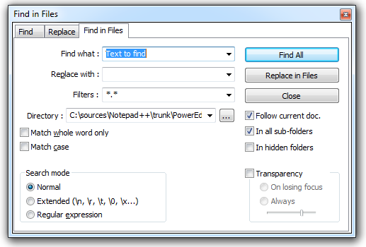
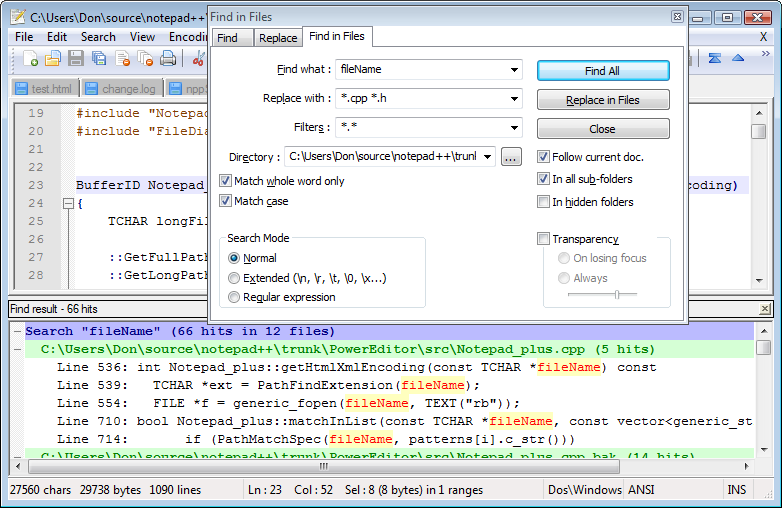

Searching in Files

The Find in Files dialog searches for matches in all the files that are specified by the given filters.
The Filters input allows you to filter be name and extension, and is a space separated list. It will automatically use the extensions associated with the language of the currently opened file, but can easily be overridden (see Languages).
The Directory field will allow you to fill in the directory to search, and by default is the directory of the active file (for more info, see Preferences).
Whether the filter and search directory conform to the current document or remain what they are unless user decides otherwise is controlled by the Follow doc checkbox.
When In all sub-folders is checked, additionally all sub-directories are scanned for search results as well. When In hidden folders is checked, hidden sub-directories will also be checked (by default, these will be skipped). will initiate the search.

Results are displayed in the Search results window.